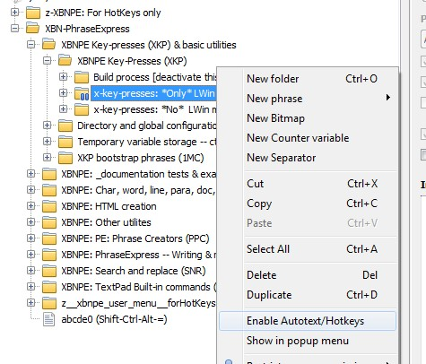

[top] XBNPE-Key-Presses: Detailed example: zUPThis document describes a single x-key-press, zUP, in detail. For all available x-key-presses, see'xhokpk'.
[back] [PREV, NEXT] XKP: No modifiers: zUP| X-Key-Press | Equivalent to the "raw"
PhraseExpress key-press |
Example raw-key-press
phrase-creators |
zUP |
{#UP}{#insert zTSlp} |
krk, "UP"
Or lur |
(Note that these example phrase-creators are for printing the raw key-press, not the x-key-press, nor the following "zTSlp".)
zTSlpThe only difference between an x-key-presss and a default PhraseExpress key-press, is the call to zTSlp that ends each x-key-press. This call is what enables you to slow down all XBN-PhraseExpress code, on demand, for diagnostic or demonstration purposes. In normal circumstances, this zTSlp phrase does not exist, and therefore its overhead is minimal.
(This zTSlp phrase is more like a variable phrase-type than a command, in that it is only dynamically-created, and when it does exist, it resides in the "cctv_folder"-autotexted folder, and also that it is destroyed every time zKeyPressFast is called [by setting its value--its "-content" parameter to nothing]. However, its name and purpose is more like a command than a variable: Where a command normally does something, a variable is normally just a holder for a discrete and static string.)
[back] [PREV, NEXT] XKP: One modifier: z?pUP| X-Key-Press | Equivalent to | Example raw-key-press
phrase-creators |
zCpUP |
{#CTRL {#UP}}{#insert zTSlp} |
krkc, "UP"
Or, with "{#UP}" in the clipboard: krxc, paste |
zApUP |
{#ALT {#UP}}{#insert zTSlp} |
krka, "UP" |
zSpUP |
{#SHIFT {#UP}}{#insert zTSlp} |
krks, "UP" |
zLpUP |
{#LWIN {#UP}}{#insert zTSlp} |
krkl, "UP" |
LWIN modifiers are disabled by defaultAll LWIN modifiers are unavailable by default. To optionally enable them, right click on
XBN-PhraseExpress/XBNPE Key-presses (XKP) & basic utilities/XBNPE Key-presses (XKP)/x-key-presses: *Only* LWin modifiers
and check
Enable Autotext/Hotkeys
(as shown in the below screenshot). If RWIN modifiers are needed, follow these steps. When "LWIN" (and/or "RWIN") modifiers are not needed, this branch--which contains more than 700 phrases--should be disabled.

[back] [PREV, NEXT] XKP: Two modifiers: z??pUP| X-Key-Press | Equivalent to | Example raw-key-press
phrase-creators |
zCApUP |
{#CTRL {#ALT {#UP}}}{#insert zTSlp} |
krkca, "UP"
Or, with "{#UP}" in the clipboard: krxca, paste |
zCSpUP |
{#CTRL {#SHIFT {#UP}}}{#insert zTSlp} |
krkcs, "UP" |
zCLpUP |
{#CTRL {#LWIN {#UP}}}{#insert zTSlp} |
krkcl, "UP" |
zASpUP |
{#ALT {#SHIFT {#UP}}}{#insert zTSlp} |
krkas, "UP" |
zALpUP |
{#ALT {#LWIN {#UP}}}{#insert zTSlp} |
krkal, "UP" |
zSLpUP |
{#SHIFT {#LWIN {#UP}}}{#insert zTSlp} |
krksl, "UP" |
When modifiers are used, they must be in order:
CTRL: 'C'ALT: 'A'SHIFT: 'S'LWIN: 'L'[back] [PREV, NEXT] XKP: Three & four modifiers: z???pUP| X-Key-Press | Equivalent to | Example raw-key-press
phrase-creators |
zCASpUP |
{#CTRL {#ALT {#SHIFT {#UP}}}}{#insert zTSlp} |
krkcas, "UP"
Or, with "{#UP}" in the clipboard: krxcas, paste |
zCALpUP |
{#CTRL {#ALT {#LWIN {#UP}}}}{#insert zTSlp} |
krkcal, "UP" |
zCSLpUP |
{#CTRL {#SHIFT {#LWIN {#UP}}}}{#insert zTSlp} |
krkcsl, "UP" |
zASLpUP |
{#ALT {#SHIFT {#LWIN {#UP}}}}{#insert zTSlp} |
krkasl, "UP" |
zCASLpUP |
{#CTRL {#ALT {#SHIFT {#LWIN {#UP}}}}}{#insert zTSlp} |
krkcasl, "UP" |